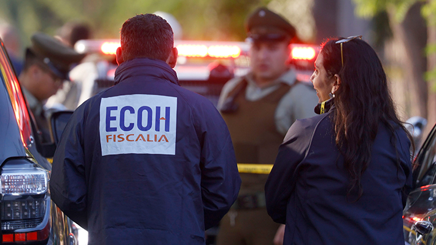
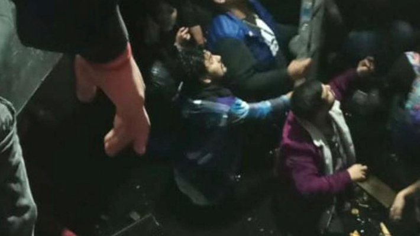
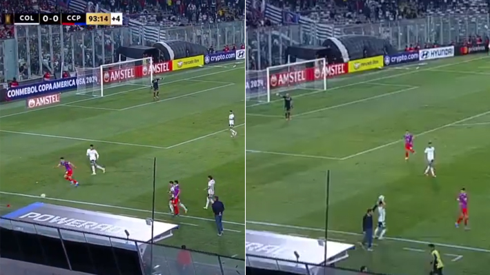
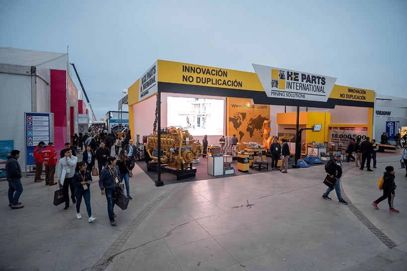
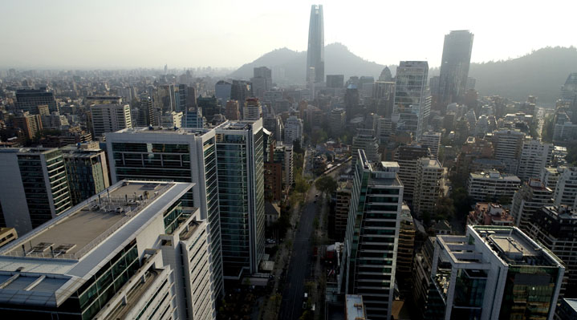

Artículos de Noticias
Registro de alto impacto: Balean casa en La Florida y familia no hace denunciaEmitido el 21/02/2022 Un grupo de antisociales dispararon más de 100 veces al frontis de un domicilio. |
Hombre resulta herido de bala en La FloridaEmitido el 07/04/2024 "Alrededor de las seis de la mañana, de acuerdo a la versión que entrega una testigo que viajaba como acompañante de la víctima que recibió los impactos balísticos, al llegar al cruce de calle Walker Martínez con Avenida Vespucio, enfrentan la luz roja del semáforo, se detienen y en ese mismo instante, son abordados por al menos tres sujetos con rostro cubierto, quienes al parecer intentan efectuar la sustracción del vehículo y al no lograr este cometido, efectúan al menos 10 disparos, de los cuales tres habrían impactado a la víctima", aseveró. Luego de recibir los disparos, continuó, "la víctima logra llegar hasta un centro asistencial (clínica Dávila Vespucio) por sus propios medios, conduciendo el vehículo en compañía de esta persona que está identificada como testigo en los hechos". Una vez en la clínica, dijo que "fue atendido por el personal de urgencia, quienes después de efectuarle los exámenes de rigor, pueden descartar que esta persona esté en riesgo vital y está trasladada a la UCI del mismo recinto". En el sitio del suceso se encuentra trabajando la Brigada de Homicidios (BH) Metropolitana de la PDI y ECOH de la Fiscalía.  |
Asistentes de un pub en Osorno caen a un subterráneo inundado tras el colapso del pisoEmitido el 07/04/2024 El piso del pub discoteque Level's ubicado en la calle Ramírez de Osorno, región de Los Lagos, colapsó y provocó que los cerca de 40 asistentes que se encontraban en el lugar cayeran a un subterráneo que se encontraba inundado -de acuerdo a lo que ha trascendido, con agua acumulada de un incendio ocurrido el 18 de noviembre de 2019-. Según consignó El Austral de Osorno, el hecho ocurrió cerca de las 6 de la mañana del sábado, horario no permitido para el funcionamiento del recinto, por lo que se habría estado llevando a cabo un "after" clandestino.  |
Deporte
Uno jugó fútbol: La historia de la dupla de remeros chilenos que se clasificó a París 2024 y la revancha que buscan en los OlímpicosCategoría: Deporte Serán los segundos olímpicos para Abaroa y Sanhueza. 07 de Abril de 2024 | 12:06 | Redactado por Felipe Santibáñez, Emol Eber Sanhueza y César Abaroa. Team Chile César Abaroa y Eber Sanhueza cruzaron la línea de meta a borde de su bote y sintieron una felicidad enorme. También alivio. La dupla de remeros chilenos se consagró campeona en la categoría doble ligero del Preolímpico de Río de Janeiro y aseguró su clasificación a París 2024. No serán los primeros Juegos Olímpicos para ellos. En Tokio fueron decimocuartos y terminaron con un sabor agridulce. Quieren una revancha. NOTICIA RELACIONADA La emotiva historia de Néstor Almanza, el joven luchador chileno de origen cubano que se clasificó a los JJ.OO. de París 2024 85 "Quedamos con esa bala atravesada, con ese gusto semi amargo. Por supuesto haber cumplido el sueño de ir está bien, pero uno también quiere competir. Ahora en París queremos dar vuelta esa sensación, demostrar de qué estamos hechos en un mega evento. Tenemos más años remando juntos en el bote, tenemos muchas cosas a favor. La ilusión sigue siendo la misma. Con estos Juegos se termina la categoría en la que competimos nosotros, va a ser la última regata del doble ligero. Ya no habrá más oportunidades para reivindicarse". 
|
Acusan a Messi de querer golpear a asistente del Monterrey de México: "Estaba endemoniado"Categoría: Deporte En duelo por la Concachampions. 06 de Abril de 2024 | 08:48 | Redactado por Manuel Rojas, Emol Messi en la tribuna del citado partido. AFP El miércoles pasado el Inter de Miami, con Lionel Messi en la tribuna por una lesión, se enfrentó al Monterrey, en duelo válido por la ida de los cuartos de final de la Concachampions. El duelo terminó 2-1 en favor de los mexicanos, pero al finalizar el partido se desató la polémica. Tras el pitazo final, Messi fue a increpar al árbitro del encuentro junto a su DT, Gerardo Martino. Además, tuvieron un fuerte altercado con integrantes del cuerpo técnico rival, comandado por Fernando Ortiz. Los incidentes no quedaron ahí, porque dos días después de estos hechos se hizo viral un audio privado de Nico Sánchez, uno de los asistentes del DT de los Rayados, donde da su versión de lo sucedido y confirma el encontrón con el astro argentino. Tiró bombas y pese a que se disculpó por sus palabras, estas fueron reproducidas por la señal mexicana de Fox Sports. |
La gran polémica en el gol de Colo Colo y que hizo explotar a Cerro Porteño y a la prensa paraguayaCategoría: Deporte Controversia en la previa de la conquista que le dio el triunfo a los albos por la Libertadores. Coletazos trajo el sufrido triunfo de Colo Colo ante Cerro Porteño en el Monumental por la Copa Libertadores. El agónico gol de Lucas Cepeda al 90+3' abrió una fuerte polémica, ya que desde Paraguay cuestionaron la legitimidad del tanto. ¿Qué pasó? De hecho, cuando termina el partido, los jugadores paraguayos se fueron con todo contra el juez Facundo Tello para reclamar la jugada. En la prensa de ese país también explotaron. El medio Última Hora tituló: "Cerro Porteño cae derrotado con polémica". Y explican: "Cuando todo parecía encaminado al empate, una polémica se generó a los 93 minutos cuando el asistente 1 Juan Belatti le dio un lateral a Colo Colo tras una asistencia de Federico Carrizo a Alfio Oviedo que claramente pasó al borde la línea. De allí nació el gol de Colo Colo por intermedio de Lucas Cépeda".  |
Negocios
Diputado Oyarzo renuncia al PDG: "No hay un proyecto político en el partido, solo negocios y chantajes"Categoría: Negocios A través de las páginas de "El Mercurio", el diputado Rubén Oyarzo adelanta la decisión adoptada de manera indeclinable, dice, respecto de renunciar a la militancia en el Partido de la Gente (PDG). De esa manera, la otrora bancada de seis integrantes quedara reducida a solo dos legisladores de una colectividad que representa la tercera fuerza política en cantidad de adherentes, por detrás del PC y del PS. En marzo de 2022 llegaron al Congreso Oyarzo, Gaspar Rivas, Karen Medina, Víctor Pino, Roberto Arroyo y Yovana Ahumada; dos años después, quedan siendo parte del comité PDG solo Medina y Rivas, aunque, con una reciente reconfiguración de fuerzas políticas, los PDG y exmilitantes de la colectividad se sumaron a la bancada de Demócratas, por lo que su presencia creció en teoría a prácticamente once diputados, los que de actuar en conjunto podrían aquilatar la aprobación de proyectos de ley en uno o en otro sentido, analizan en la Cámara. En esta entrevista, el parlamentario del distrito 8 también fija postura acerca de quien es su candidata para presidir la Cámara de Diputados, respaldo que dice recae en Joanna Pérez, de Demócratas. Eso, sobre una decisión que la corporación debería adoptar el próximo lunes 15 de abril, mientras que mañana tendrían que votar la renuncia de la mesa saliente liderada por el DC Ricardo Cifuentes. Consultado por El Mercurio, Oyarzo señaló que su salida se "venía desde hace un tiempo pensando y meditando. No estábamos en concordancia con el proyecto político que en un inicio era poner en el centro a la gente, ver sus prioridades, estar en terreno, representar a la clase media, a la clase media emergente y veíamos que eso lamentablemente se perdía, que era mas una secta; la política no puede ser el negocio de una persona, sino que tiene que estar a disposición de la gente y eso se perdió. No hay un proyecto político en el partido, solo hay negocios y chantajes, una demanda de un posible fraude, lo que denunciamos ante el Servel y no nos han escuchado. Llegó la hora de salirse del Partido de la Gente". |
Gremios mineros destacan a Exponor 2024 como 'punto de inflexión' para inversiones: Esperan negocios por US$900 millonesCategoría: Negocios "Significará un aporte importante para la reactivación económica desde la región al país", comentó el presidente del Consejo Minero, Joaquín Villarino La Asociación de Industriales de Antofagasta, AIA, organizó en la semana un inédito encuentro con los principales representantes de la CPC, Sofofa, Sonami, el Consejo Minero, junto a la Ministra de Minería, para analizar y discutir estrategias que fortalezcan la economía chilena. Ahí, la ministra de Minería, Aurora Williams, junto con reiterar el compromiso del gobierno en materia de inversión regional, subrayó la alta participación de empresas nacionales e internacionales en Exponor 2024 (3 y 6 de junio), que posiciona la cadena de valor de los proveedores, con oportunidad de internacionalizarse. “Es importante que se desarrolle en la región minera, con una proyección de negocios por más de US$900 millones, lo que natural y significativamente aporta no solo a la economía regional sino que a la macrozona norte y al país, brindando -en particular- un dinamismo a la industria minera”.  |
Previo al IPC: Son malos los augurios para la inflación de marzo, acorde a lo advertido por el Banco CentralCategoría: Negocios El lunes a las 08.00 horas, el INE dará a conocer el Índice de Precios al Consumidor (IPC) del tercer mes del año. Mañana a las 8.00 horas el Instituto Nacional de Estadísticas (INE) dará a conocer el Índice de Precios al Consumidor (IPC) de marzo y las proyecciones del mercado no son alentadoras para el dato inflacionario del país. Lo que en caso de concretarse, serían tres meses amargos para la inflación durante 2024. El IPC de enero fue de 0,7%, mientras que el de febrero 0,6%. Registros altos que han impactado en las proyecciones inflacionarias de 2024 y que alejan la posibilidad de alcanzar pronto la meta de 3% acumulado anual. Con este último dato, la inflación en el país acumuló un 1,3% en el año y 4,5% a doce meses respecto a la serie empalmada del índice. Con esto, la inflación anual terminó con su tendencia a la baja tras 14 meses.  |